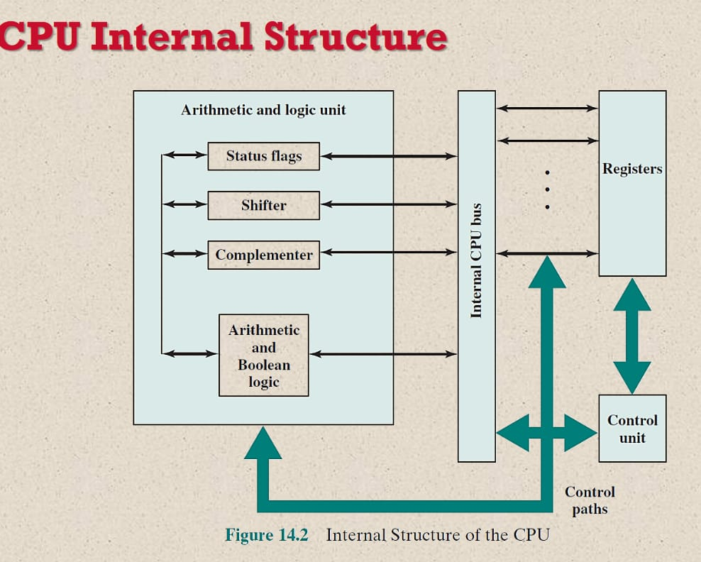

- Motherboard
- Random Access Memory(RAM)
- Central Processing Unit(CPU)
- A Graphics Processing Unit(GPU)
- Storage Solid State Drive(SSD)or Hard Disk Drive(HDD)
The motherboard serves as a single platform to connect all of the parts of a computer together.
It connects the CPU, memory, hard drives, optical drives, video card, sound card, and other ports and expansion cards directly or via cables.
It can be considered as the backbone of a computer.
The motherboard is mounted inside the case and is securely attached via small screws through pre-drilled holes. Motherboard contains ports to connect all of the internal components. It provides a single socket for CPU, whereas for memory, normally one or more slots are available.
Motherboards provide ports to attach the floppy drive, hard drive, and optical drives via ribbon cables.
Motherboard carries fans and a special port designed for power supply.
There is a peripheral card slot in front of the motherboard using which video cards, sound cards, and other expansion cards can be connected to the motherboard.
On the left side, motherboards carry a number of ports to connect the monitor, printer, mouse, keyboard, speaker, and network cables. Motherboards also provide USB ports, which allow compatible devices to be connected in plug-in/plug-out fashion. For example, pen drive, digital cameras, etc.
RAM (Random Access Memory) is the internal memory of the CPU for storing data, program, and program result. It is a read/write memory which stores data until the machine is working. As soon as the machine is switched off, data is erased.
Access time in RAM is independent of the address, that is, each storage location inside the memory is as easy to reach as other locations and takes the same amount of time.
Data in the RAM can be accessed randomly but it is very expensive.
RAM is volatile, i.e. data stored in it is lost when we switch off the computer or if there is a power failure. Hence, a backup Uninterruptible Power System (UPS) is often used with computers.
RAM is small, both in terms of its physical size and in the amount of data it can hold.
RAM is of two types
−
- Static RAM (SRAM)
- Dynamic RAM (DRAM)
-
Central Processing Unit(CPU)
A central processing unit (CPU), also called a central processor, main processor or just processor, is the electronic circuitry that executes instructions comprising a computer program.
The CPU performs basic arithmetic, logic, controlling, and input/output (I/O) operations specified by the instructions in the program.

-
Graphics Processing Unit(GPU)
A graphics processing unit (GPU) is a specialized electronic circuit designed to rapidly manipulate and alter memory to accelerate the creation of images in a frame buffer intended for output to a display device.
GPUs are used in embedded systems, mobile phones, personal computers, workstations, and game consoles.
A computer hard disk drive is a non-volatile data storage device.
Non-volatile refers to storage device that maintain stored data when turned off.All computers need a storage device ,and HHDs are just one example of a type of storage device.
A solid-state drive (SSD) is a solid-state storage device that uses integrated circuit assemblies to store data persistently, typically using flash memory, and functioning as secondary storage in the hierarchy of computer storage.
- accelerometers
- graphics processors
- flash-based memory
- A touch-screen
- Camera Sensors
- A GPS receiver
- A bluetooth chip
- A sound processor and speakers
- A battery
- Memory chips
.jpeg)
A touchscreen is a computer screen that can be used by touching it with a finger or a stylus pen, instead of using a mouse and keyboard.
It can be described as a touchpad with a screen built-in to it.
One of the components that determines the speed of the tablet is the processor. A processor has multiple processor cores.
The processor divides tasks over multiple cores.
This means that a processor with more cores can perform tasks more efficiently.
.jpeg)
The RAM stores information for the processor and apps that are used when using your tablet.
Because the RAM is a chip it means data can be stored and retrieved by the processor for applications at an amazingly fast speed.
Far quicker than it is to access data stored in the storage of your tablet.
An integrated motherboard has various components integrated into the board itself.
These may contain CPU, video card, sound card and multiple controller cards.